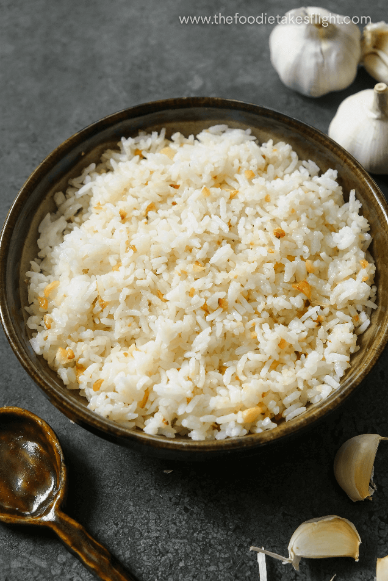

Garlic Fried Rice

What is Garlic Fried Rice?
I'm not sure about other cultures, but it's something we make a lot in Filipino cultures. Garlic fried rice is a super simple recipe to add a bit of flavor to your dish without taking away from the main entree(s).
Unlike other fried rice dishes, like shrimp fried rice, garlic fried rice is not meant to be eaten alone (I mean you can but it would be kinda weird).
Ingredients
- Rice, 2 cups (cooked & frozen overnight)
- Garlic, 6 cloves (roughly chopped)
- Cooking Oil, 2 tbsp (any neutral oil will do)
Steps
- Place pan on cooktop and set corresponding burner to medium high heat
- Pour cooking oil in pan and let heat up
- Once oil is hot, place chopped garlic in pan and stir constantly
- When garlic turns golden brown, place rice in pan and toss (coat every grain of rice in the garlic-flavored oil.
- Serve rice in a plate and enjoy